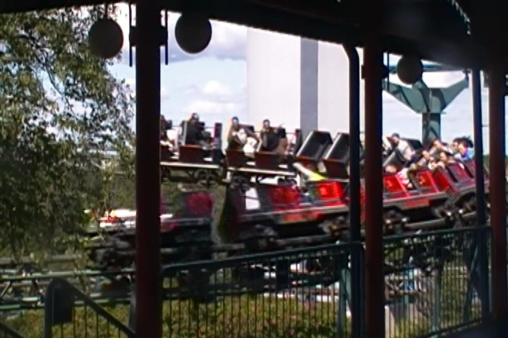
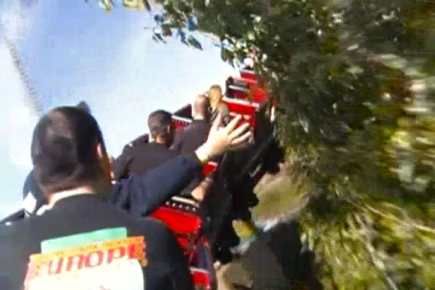

| |
Pikajuna Review

We're here at Linnanmäki to ride Pikajuna. You get in the cars and off you go. We go around a turn slowly, though to be fair, the turn is sort of an upward helix. This leads to some straight track, though it's a hill, and we crawl through it. Fun. We then head around another turn that's upwards, but we accelerate. Because once again, we're on a powered coaster. And just in case you forgot, powered coasters DO NOT COUNT!! We then go through a couple more turns, getting a decent view of the park, particuarly of Salama. We eventually head into a small downward helix. We suddenly accelerate as they remember that you're supposed to tell that you accelerate going downhill, and that's how gravity works. But we can still tell that it's fake. We go through a turn afterwards, this gives us some laterals. Eh, hope it does more. Nope. We go through the station and do it again. Honestly, this is one of the weaker powered coasters. Even by Pseudocredit standards, it's dull (OK. By European Pesudocredit standards). You get two laps on Pikajuna. Dull, but whatever. It doesn't even count, so you can't whore it. You just enjoy the ride.
4/10
Location: Linnanmäki
Opened: 1990
Built by: Mack
Last Ridden: June 28, 2014
Pikajuna Photos

Home
|